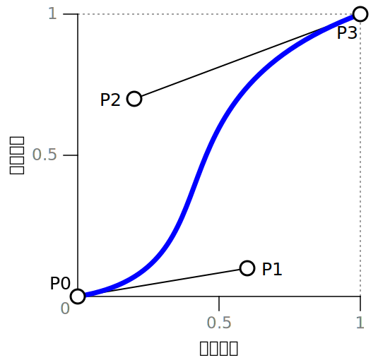
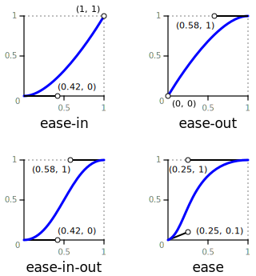
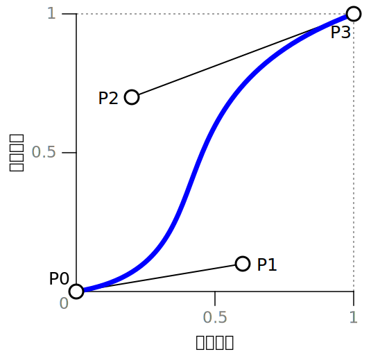
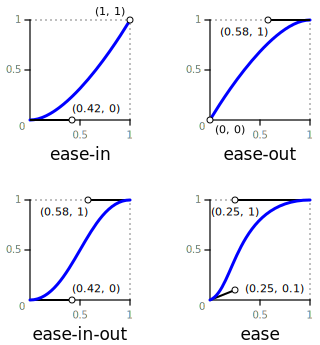
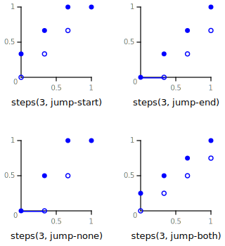
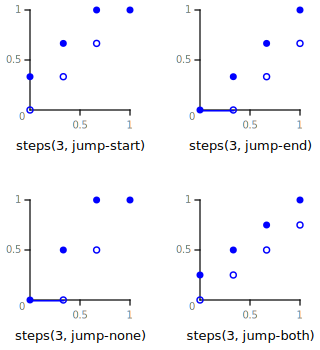

この~CSS~moduleは、作者が，値の変化~率を制御する変形を定義する仕方を述べる。
~animationに適用された場合、そのような変形を利用すれば，慣性などの物理的な現象を模倣したり, ~robotの様にカクカク動く~animationを生産できる。
◎
This CSS module describes a way for authors to define a transformation that controls the rate of change of some value. Applied to animations, such transformations can be used to produce animations that mimic physical phenomena such as momentum or to cause the animation to move in discrete steps producing robot-like movement.
何らかの値の変化~率を制御したいと欲されることは多い。
例えば、動きが加速され，次第に勢いが増す要素には、重さがあるような感覚を与えれる。
これを利用すれば、直感的な~UI要素や，物理的に本物らしく挙動する~cartoon-propsを生産できる。
また、歯が常に同じ位置に現れるように回転する歯車など，飛び飛びに動く~animationが欲されることも ときにはある。
◎
It is often desirable to control the rate at which some value changes. For example, gradually increasing the speed at which an element moves can give the element a sense of weight as it appears to gather momentum. This can be used to produce intuitive user interface elements or convincing cartoon props that behave like their physical counterparts. Alternatively, it is sometimes desirable for animation to move forwards in distinct steps such as a segmented wheel that rotates such that the segments always appear in the same position.
同様に，~gradient補間の変化~率の制御を利用すれば、［
面の凹凸を示唆する／縞模様の効果
］などの種々の視覚的な効果を生産できる。
◎
Similarly, controlling the rate of change of gradient interpolation can be used to produce different visual effects such as suggesting a concave or convex surface, or producing a striped effect.
`~easing関数$は、入力~進捗~値から対応する出力~進捗~値を生産することにより，そのような値を変形する手段を供する。
◎
Easing functions provide a means to transform such values by taking an input progress value and producing a corresponding transformed output progress value.
`easing-function-example^dgm
`ease-in^v 効果を生産する~easing関数の例。
この~easing関数は、入力~進捗~値 0.7 に対しては，出力~進捗 0.52 を生産する。
この~easing関数を~animationに適用すれば、~animationは，最初は低速に, 徐々に早く進捗するようになる。
◎
Example of an easing function that produces an ease-in effect. Given an input progress of 0.7, the easing function scales the value to produce an output progress of 0.52. Applying this easing function to an animation would cause it to progress more slowly at first but then gradually progress more quickly.
2. ~easing関数
`~easing関数@
【 “加減速” 関数】は、`入力~進捗~値$から`出力~進捗~値$を生産する。
◎
An easing function takes an input progress value and produces an output progress value.
`~easing関数$は、純粋な関数でなければナラナイ
— すなわち、同じ入力に対しては，常に同じ`出力~進捗~値$を生産する。
◎
An easing function must be a pure function meaning that for a given set of inputs, it always produces the same output progress value.
`入力~進捗~値@
は，範囲 [-∞, ∞] に入る実数であり。
その範囲は概して [0, 1] になるが、複数の`~easing関数$が連鎖される事例ではそうなるとは限らない。
◎
The input progress value is a real number in the range [-∞, ∞]. Typically, the input progress value is in the range [0, 1] but this may not be the case when easing functions are chained together.
`出力~進捗~値@
は，範囲 [-∞, ∞] に入る実数である。
◎
The output progress value is a real number in the range [-∞, ∞].
一部の種の~easing関数は、後述する追加的な`直前~flag$も入力にとる。
◎
Some types of easing functions also take an additional boolean before flag input which is defined subsequently.
この仕様は、以下に与える 4 種の~easing関数を定義する。
◎
This specification defines four types of easing functions whose definitions follow.
`~easing関数$を指定するための構文は、次に従う：
◎
The syntax for specifying an easing function is as follows:
`線型~easing関数@
は、恒等~関数である
— すなわち、どの入力に対しても，`入力~進捗~値$と`出力~進捗~値$は等しくなる。
◎
The linear easing function is an identity function meaning that its output progress value is equal to the input progress value for all inputs.
`線型~easing関数$の構文は、単に
`linear@v
~keywordである。
◎
The syntax for the linear easing function is simply the linear keyword.
`~cubic~Bezier~easing関数@
は、`~easing関数$の一種であり，~cubic~Bezier曲線の
2 個の制御点 %P1, %P2 を指定する 4 個の実数で定義される。
曲線の端点 %P0, %P3 は、順に固定的な点
( 0, 0 ), ( 1, 1 )
で与えられる。
%P1, %P2 の %x 座標は、範囲 [0, 1] に制約される。
◎
A cubic Bézier easing function is a type of easing function defined by four real numbers that specify the two control points, P1 and P2, of a cubic Bézier curve whose end points P0 and P3 are fixed at (0, 0) and (1, 1) respectively. The x coordinates of P1 and P2 are restricted to the range [0, 1].
`cubic-bezier-easing-curve^dgm
~easing関数として利用される~cubic~Bezier曲線。
曲線の形状は、制御点 %P1, %P2 の所在により決定される。
入力~進捗~値／出力~進捗~値
は、曲線の
%x 値 ／ %y 値
として~~働く。
◎
A cubic Bézier curve used as an easing function. The shape of the curve is determined by the location of the control points P1 and P2. Input progress values serve as x values of the curve, whilst the y values are the output progress values.
`~cubic~Bezier~easing関数$の構文は、次で与えられる（ `CSS3VAL$r による記法を利用して）：
◎
A cubic Bézier easing function has the following syntax (using notation from [CSS3VAL]):
`~cubic~Bezier~easing関数$を指定する。
4 個の実数は、順に
( %x1, %y1, %x2, %y2 )
として、曲線の点 %P1, %P2 を指定する。
%x1, %x2 とも範囲 [0, 1] に入っていなければナラナイ
— さもなければ定義は無効になる。
◎
Specifies a cubic Bézier easing function. The four numbers specify points P1 and P2 of the curve as (x1, y1, x2, y2). Both x values must be in the range [0, 1] or the definition is invalid.
上に挙げた~keyword値を下の例で示す：
◎
The keyword values listed above are illustrated below.
`curve-keywords^dgm
各 ~cubic~Bezier~easing関数~keyword値により生産される，~easing関数。
◎
The easing functions produced by each of the cubic Bézier easing function keyword values.
2.2.1. ~cubic~Bezier~easing関数の出力
入力~進捗から出力~進捗への対応付けは、所与の`入力~進捗~値$ %x に対し，対応する`出力~進捗~値$ %y を決定することにより遂行される。
この曲線の評価法は、 `FUND-COMP-GRAPHICS$r などの多くの資料で~~論じられている。
◎
The mapping from input progress to output progress is performed by determining the corresponding y value (output progress value) for a given x value (input progress value). The evaluation of this curve is covered in many sources such as [FUND-COMP-GRAPHICS].
範囲 [0, 1] に入らない`入力~進捗~値$に対しては、次に従って得られる 最も近い曲線の端点における接線を利用して無限に伸ばされる：
◎
For input progress values outside the range [0, 1], the curve is extended infinitely using tangent of the curve at the closest endpoint as follows:
0 未満の`入力~進捗~値$に対しては：
◎
For input progress values less than zero,
%P1 の %x 値 ~GT 0 ならば：
%P1, %P0 を通る直線を接線に利用する。
◎
If the x value of P1 is greater than zero, use a straight line that passes through P1 and P0 as the tangent.
他の場合， %P2 の %x 値 ~GT 0 ならば：
%P2, %P0 を通る直線を接線に利用する。
◎
Otherwise, if the x value of P2 is greater than zero, use a straight line that passes through P2 and P0 as the tangent.
他の場合、範囲 [-∞, 0) 内のすべての`入力~進捗~値$に対し，`出力~進捗~値$は 0 になる。
◎
Otherwise, let the output progress value be zero for all input progress values in the range [-∞, 0).
1 を超える`入力~進捗~値$に対しては：
◎
For input progress values greater than one,
%P2 の %x 値 ~LT 1 ならば：
%P2, %P3 を通る直線を接線に利用する。
◎
If the x value of P2 is less than one, use a straight line that passes through P2 and P3 as the tangent.
他の場合， %P1 の %x 値 ~LT 1 ならば：
%P1, %P3 を通る直線を接線に利用する
◎
Otherwise, if the x value of P1 is less than one, use a straight line that passes through P1 and P3 as the tangent.
他の場合、範囲 (1, ∞] 内のすべての`入力~進捗~値$に対し，`出力~進捗~値$は 1 とする。
◎
Otherwise, let the output progress value be one for all input progress values in the range (1, ∞].
`階段~easing関数@
は、`~easing関数$の一種であり，入力~時間軸を指定された個数の時区間に等分する。
それは［
`段数$,
`段~位置$
］で定義される。
その構文は：
◎
A step easing function is a type of easing function that divides the input time into a specified number of intervals that are equal in length. It is defined by a number of steps, and a step position. It has following syntax:
各種 値の意味は、次に従う：
◎
The meaning of each value is as follows:
`step-start@v
`steps(1, start)^v
に算出される。
◎
Computes to steps(1, start)
`step-end@v
`steps(1, end)^v
に算出される。
◎
Computes to steps(1, end)
`step-easing-keyword-examples^dgm
階段~easing関数の各種~keyword値の例。
◎
Example step easing function keyword values.
`steps@f(`integer$t[, `step-position$t ]?)
1 個目の~parameterは、
`段数@
を与え，関数における時区間の個数を指定する。
値は［
2 個目の~parameterが `jump-none$v の場合は 2 以上 ／
~ELSE_ 1 以上
］の整数でなければナラナイ。
◎
The first parameter specifies the number of intervals in the function. It must be a positive integer greater than 0 unless the second parameter is jump-none in which case it must be a positive integer greater than 1.
省略可能な 2 個目の~parameterは、次に挙げるいずれかの値を利用して
`段~位置@
を指定する
— それは、`入力~進捗~値$［
0 の所, 1 の所
］で “段差” （出力~進捗~値の変化）が生じるかどうかを定義する：
◎
The second parameter, which is optional, specifies the step position using one of the following values:
`jump-start@v
`入力~進捗~値$［
0 ／ 1
］の所で段差は［
生じる／生じない
］。
◎
The first rise occurs at input progress value of 0.
`jump-end@v
`入力~進捗~値$［
0 ／ 1
］の所で段差は［
生じない／生じる
］。
◎
The last rise occurs at input progress value of 1.
`jump-none@v
`入力~進捗~値$［
0 ／ 1
］の所で段差は生じる。
◎
All rises occur within the range (0, 1).
`jump-both@v
`入力~進捗~値$［
0 ／ 1
］の所で段差は生じない。
◎
The first rise occurs at input progress value of 0 and the last rise occurs at input progress value of 1.
`start@v
`jump-start$v として挙動する。
◎
Behaves as jump-start.
`end@v
`jump-end$v として挙動する。
◎
Behaves as jump-end.
2 個目の~parameterが省略された場合、 `end$v と見做される。
◎
If the second parameter is omitted, the value end is assumed.
これらの値を下に図示する：
◎
These values are illustrated below:
`step-easing-func-examples^dgm
階段~easing関数の例。
◎
Example step easing functions.
2.3.1. 階段~easing関数の出力
段の境目における`階段~easing関数$の結果は，概念的には 境目の直後の段に対応するが、入力として追加的な
`直前~flag@
が ~ON にされて渡された場合の結果は，境目の直前の段に対応する。
◎
At the exact point where a step occurs, the result of the function is conceptually the top of the step. However, an additional before flag passed as input to the step easing function, if true, will cause the result of the function to correspond to the bottom of the step at the step point.
◎
As an example of how the before flag affects the behavior of this function, consider an animation with a step easing function whose step position is start and which has a positive delay and backwards fill.
例えば、次の~CSS~animationを利用した場合：
◎
For example, using CSS animation:
animation: moveRight 5s 1s steps(5, start);
遅延~段階における`入力~進捗~値$は 0 になるが、~animation時区間にまだ達していないことを指示するため，`直前~flag$は ~ON にされ†、~easing関数が生産する`出力~進捗~値$は，最初の境目の直前に対応する 0 になる。
【† どこでそのように規定されている？（次の段落も）】
◎
During the delay phase, the input progress value will be zero but if the before flag is set to indicate that the animation has yet to reach its animation interval, the easing function will produce zero as its output progress value, i.e. the bottom of the first step.
~animationの時区間が始まる正確な瞬間における`入力~進捗~値$も，依然として 0 になるが、`直前~flag$は ~OFF にされるので，~easing関数の結果は 最初の境目の直後に対応することになる。
◎
At the exact moment when the animation interval begins, the input progress value will still be zero, but the before flag will not be set and hence the result of the easing function will correspond to the top of the first step.
下に与える~algoに見られるように，`出力~進捗~値$を計算する目的においては、
`段~位置$［
`start$v は `jump-start$v と等価 ／
`end$v は `jump-end$v と等価
］と見なされる。
◎
For the purposes of calculating the output progress value, the step position start is considered equivalent to jump-start. Likewise end is considered equivalent to jump-end. As a result, the following algorithm does not make explicit reference to start or end.
注記：
~UAは、直列化の目的においては，依然として
`jump-start$v, `start$v
に対する結果を異らせるモノトスル（
§ 直列化
を見よ）。
◎
Note: User agents must still differentiate between jump-start and start for the purpose of serialization (see §2.4 Serialization).
`出力~進捗~値$は、所与の
( `入力~進捗~値$, `直前~flag$ )
から，次に従って計算される：
◎
The output progress value is calculated from the input progress value and before flag as follows:
%現在の段 ~LET ( `入力~進捗~値$ ~MUL `段数$ ) を超えない最大の整数
◎
Calculate the current step as floor(input progress value × steps).
~IF［
%段~位置 ~IN { `jump-start$v, `jump-both$v }
］
⇒
%現在の段 ~INCBY 1
◎
If the step position property is one of:
• jump-start,
• jump-both,
◎
increment current step by one.
~IF［
`直前~flag$ ~EQ ~ON
］~AND［
( `入力~進捗~値$ ~MUL `段数$ ) は整数である
］
⇒
%現在の段 ~DECBY 1
◎
If both of the following conditions are true:
• the before flag is set, and
• input progress value × steps mod 1 equals zero (that is, if input progress value × steps is integral), then
◎
decrement current step by one.
~IF［
`入力~進捗~値$ ~GTE 0
］~AND［
%現在の段 ~LT 0
］
⇒
%現在の段 ~SET 0
◎
If input progress value ≥ 0 and current step < 0, let current step be zero.
%段差数 ~LET %段~位置 に応じて
⇒＃
`jump-start$v または `jump-end$v ならば`段数$ ／
`jump-none$v ならば`段数$ ~MINUS 1 ／
`jump-both$v ならば`段数$ ~PLUS 1 ／
◎
Calculate jumps based on the step position as follows:
• jump-start or jump-end
•• steps
• jump-none
•• steps - 1
• jump-both
•• steps + 1
~IF［
`入力~進捗~値$ ~LTE 1
］~AND［
%現在の段 ~GT %段差数
］
⇒
%現在の段 ~LET %段差数
◎
If input progress value ≤ 1 and current step > jumps, let current step be jumps.
注記：
この段と 2 つ前の段は、所与の［
範囲 [0, 1] に入る`入力~進捗~値$
］に対し，階段~easing関数が［
範囲 [0, 1] に入らない`出力~進捗~値$
］を生産しないこと確保する。
◎
Steps 4 and 6 in this procedure ensure that given an input progress value in the range [0, 1], a step easing function does not produce an output progress value outside that range.
例えば，`段~位置$が `jump-start$v にされた階段~easing関数は、数学的には［
`入力~進捗~値$ ~EQ 1
］のときにも 境目の直後の段に上がる（すなわち 1 を超える）と直感的に期待できようが、そのような~easing関数は，~animationが前方へ延伸するとき（ `animation-fill-mode$p は `forwards^v ）には、`出力~進捗~値$として 1 を生産することが期待される。
◎
For example, although mathematically we might expect that a step easing function with a step position of jump-start would step up (i.e. beyond 1) when the input progress value is 1, intuitively, when we apply such an easing function to a forwards-filling animation, we expect it to produce an output progress value of 1 as the animation fills forwards.
似たような状況は、`段~位置$が `jump-end$v にされた階段~easing関数が，~animationの遅延~段階（ `animation-delay$p ）に適用されたときにも生じる。
◎
A similar situation arises for a step easing function with a step position of jump-end when applied to an animation during its delay phase.
~RET %現在の段 ~DIV %段差数
◎
The output progress value is current step / jumps.
2.4. 直列化
~easing関数は
`CSSOM$r に定義される
共通の直列化~patternに加えて，次の追加的な要件を利用して直列化される：
◎
Easing functions are serialized using the common serialization patterns defined in [CSSOM] with the following additional requirements:
~keyword値［
`ease$v, `linear$v, `ease-in$v, `ease-out$v, `ease-in-out$v
］は、同じ文字列に直列化する
— 等価な `cubic-bezier()$f 関数には変換されない。
◎
The keyword values ease, linear, ease-in, ease-out, and ease-in-out are serialized as-is, that is, they are not converted to the equivalent cubic-bezier() function before serializing.
階段~easing関数［
`steps()$f 関数 ／ `step-start$v ／ `step-end$v
］は、`段~位置$に応じて，次の形に直列化する：
◎
Step easing functions, whether they are specified using the steps() function or either of the step-start or step-end keywords, are serialized as follows:
`jump-end$v ／ `end$v ならば
⇒
`steps$f(`integer$t)
◎
If the step position is jump-end or end, serialize as steps(<integer>).
~ELSE_
⇒
`steps$f(`integer$t, `step-position$t)
◎
Otherwise, serialize as steps(<integer>, <step-position>).
3. ~privacy／~securityの考慮点
この仕様は、他の仕様から参照できる共通の定義を供するものであり，~Web~platformに新たな能力を直に導入することはないので、~privacy／~securityの新たな懸念を導入することはない。
◎
This specification does not directly introduce any new capabilities to the Web platform but rather provides common definitions that may be referenced by other specifications. As a result, it does not introduce any new privacy and security concerns.
~easing関数は、大概は，範囲 [0, 1] に入る`入力~進捗~値$をとり, 範囲 [0, 1] に入る`出力~進捗~値$を生産するが、常に，とは限らない。
この仕様に定義される特色機能を参照している仕様は、それを考慮するベキである
— ~easing関数の応用は、入力や出力がこの範囲に入らないときの挙動を定義して，新たな~security考慮点を導入しないことを確保するベキである。
◎
Specifications referencing the features defined in this specification should consider that while easing functions most commonly take an input progress value in the range [0,1] and produce an output progress value in the range [0, 1], this is not always the case. Applications of easing functions should define the behavior for inputs and outputs outside this range to ensure they do not introduce new security considerations.
4. 最後の発行版からの変更点
2018年 10月 9日 作業草案
からの変更点は：
◎
The following changes have been made since the 9 October 2018 Working Draft:
“`timing^en 関数（計時~関数）” を “~easing関数” に~~改称し、これらの関数が~animationのみに適用されると見做されないよう，もっと一般的な~~言葉で言い直した。
◎
Reworded specification to refer to “easing functions” rather than “timing functions” and use more general language that does not assume these functions are only applied to animations.
謝辞
この仕様は、
L. David Baron, Dean Jackson, David Hyatt, Chris Marrin.
各氏により編集された
CSS Transitions
仕様に基づいている。
次の方々からのフィードバックと協力にも感謝する：
◎
This specification is based on the CSS Transitions specification edited by L. David Baron, Dean Jackson, David Hyatt, and Chris Marrin.
The editors would also like to thank
Douglas Stockwell,
Steve Block,
Tab Atkins,
Rachel Nabors,
Martin Pitt,
Animation at Work slack
community
for their feedback and contributions.
 



 
